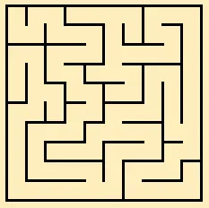
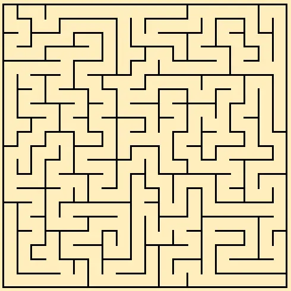
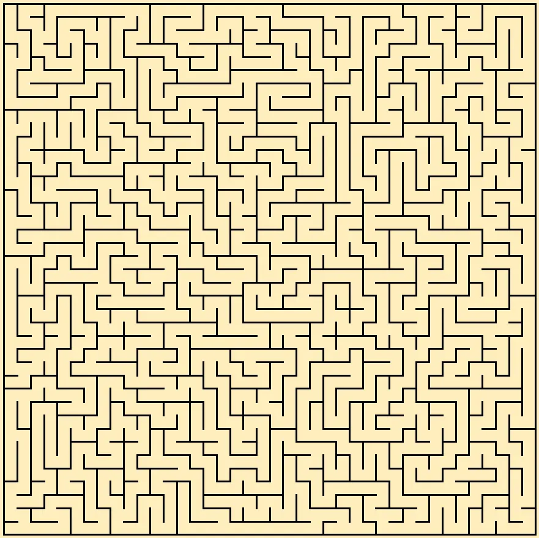

Рекурсивний пошук з поверненням
Що це?
Рекурсивний пошук з поверненням (Reverce backtracking) — це чи не найпростіший алгоритм для генерації ідеальних лабіринтів. Лабіринти, які він утворює мають довші ходи у порівнянні з алгоритмом Еллера. Окрім того, алгоритм з легкістю можна модифікувати для генерації лабіринтів з розмірністю вищою ніж 2D, чи лабіринтів на неквадратній сітці. Проте, він зовсім не підходить для генерації безкінечних лабіринтів.
Ось декілька лабіринтів, створених цим алгоритмом:
  
Алгоритм
На початку роботи всі клітинки в нашому лабіринті закриті стінками. В процесі виконання ми будемо прорізати крізь них ходи. Для цього алгоритм використовує покажчик на певну клітинку. Для зручності, назвімо його, наприклад, щуром.

Наш щур рухається по лабіринту, переміщаючись на сусідні клітинки, на яких він ще не був. При цьому він руйнує стінку між ними. Клітинки, які вже були відвідані потрібно якось позначати. В цьому прикладі вони замальовані трохи темнішим кольором. Окрім того, щур пам’ятає свій пройдений шлях, як стек куди він заносить відвідані клітинки (стек шляху). На зображеннях шлях щура зображений як коричнева лінія.
На кожному своєму кроці щур оглядає чотири навколишні клітинки, та випадково обирає одну, серед тих, до яких він ще не заходив. Він руйнує стінку в тому напрямку та переміщується на обрану клітинку. А клітинку, яку він щойно залишив, додає до стеку шляху.

Якщо ж щуру немає куди йти, так як усі сусідні клітинки зайняті, то він рухається назад звідки він прийшов, та відкидає ці клітинки зі стеку шляху. Так, він рухається задом на перед, до тих пір, поки знову не знайде клітинку, біля якої є ще не відвідані клітинки, та піде в одну з них.
Після багаторазових проходжень та повернень назад, щур врешті-решт повернеться до самого початку лабіринту, а його стек шляху буде порожнім. Це й буде свідчити про те, що алгоритм завершив свою роботу.
Програмний код
Нижче наведена моє виконання цього алгоритму на мові C.
void maze(const int width, const int height, Cell map[width][height])
{
int x = 0, y = 0; /* Координати „щура“ */
/* Стек що зберігає шлях пройдений щуром */
Point *track = malloc(sizeof(Point) * width * height);
int i = 0; /* Кількість елементів у стекові */
/* Доступні напрямки */
Dir *free_dirs = malloc(sizeof(Dir) * 4);
int dc = 0; /* кількість доступних напрямків */
do {
dc = 0; /* очищуємо список напрямків */
/* Позначаємо зайняту клітинку як відвідану */
map[x][y].visited = 1;
/* Перевіряємо 4 сторони, та заносимо вільні до списку */
if (y > 0 && !map[x][y-1].visited)
free_dirs[dc++] = UP;
if (y < height - 1 && !map[x][y+1].visited)
free_dirs[dc++] = DOWN;
if (x > 0 && !map[x-1][y].visited)
free_dirs[dc++] = LEFT;
if (x < width - 1 && !map[x+1][y].visited)
free_dirs[dc++] = RIGHT;
if (dc == 0) {
/* Якщо вільних шляхів немає — повертаємось на попередню клітинку */
Point prev_point = track[i--];
x = prev_point.x;
y = prev_point.y;
} else {
/* Інакше — переходим до нової клітинки */
/* Заносимо зайняту клітинку до списку, так як скоро ми її покинемо */
track[++i] = (Point){x, y};
/* Обираємо один із доступних напрямків */
Dir random_dir = free_dirs[rand() % dc];
switch (random_dir) {
case UP:
y--;
map[x][y].way_down = 1;
break;
case DOWN:
map[x][y].way_down = 1;
y++;
break;
case RIGHT:
map[x][y].way_right = 1;
x++;
break;
case LEFT:
x--;
map[x][y].way_right = 1;
break;
}
}
} while (x != 0 || y != 0); /* Якщо ми повернулись в {0,0} — завершуємо роботу */
/* Звільнюємо виділену пам'ять */
free(track);
free(free_dirs);
}Можливі напряямки я задаю як перечислення:
typedef enum
{
UP,
RIGHT,
DOWN,
LEFT
} Dir;Сам лабіринт — це двовимірний масив клітинок. Ці клітинки позначаються як структури:
typedef struct
{
int visited;
int way_down;
int way_right;
} Cell;Пройдений щуром шлях — це список точок, де він раніше знаходився. Кожна точка описана ось такою структурою:
typedef struct
{
int x;
int y;
} Point;